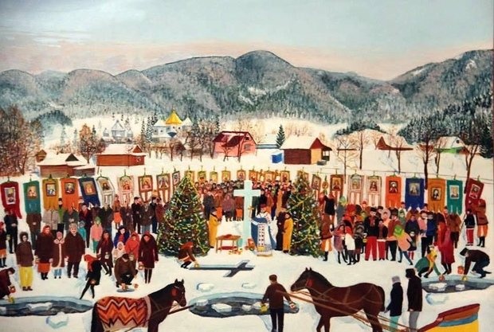

Водохреще, Хрещення чи Йордан – народно-релігійне свято, котре православні та греко-католики святкують
19 січня. Воно є останнім святом з різдвяно-новорічного циклу та завершує Святки – 12 днів Коляди між
Різдвом та Водохрещем.
Із цим святом пов’язують хрещення Христа. Коли Ісус Христос досяг 30-річного віку, він прийняв хрещення від Івана Хрестителя в річці Йордані, пише Етноепоха. Згідно з Біблією, під час хрещення на Ісуса з неба у вигляді голуба зійшов Святий Дух і пролунав голос Божий, тому свято і називається Богоявленням. На Водохреще багато людей бажають зануритися в ополонку, щоб вилікуватися від недуг. Люди вірять, що у цей день вода очищає та стає цілющою, тому усі бажаючі занурюються в ополонку, щоб бути здоровими цілий рік.
В Україні була поширена традиція купання в ополонці на Водохреща, яка відродилася наприкінці ХХ — на початку ХХІ ст. Здавна вірили, що хворі зможуть одужати від води під час купання. Наші предки вважали, що вода у Водохресну ніч набирає цілющу силу.
Християнство спочатку сильно боролося з цим шануванням води, але не змогло його перемогти, і в кінці прийняло й освятило його, і в нас тепер ставлять каплички над криничками, джерельцями, потоками й т. ін., і власне тут часто появляються чудотворні Ікони. Хресні ходи до таких капличок особливо популярні в нас в Україні.
На Святах сонця шанувалася й вода, і це перейшло й до Християнства. На Святі народження сонця (пізніше Різдво) вода мала цілющу силу, і охочі в ній купалися, що робиться на Водохреща (на Йордані) й тепер.
На Святах сонця шанувалася й вода, і це перейшло й до Християнства. На Святі народження сонця (пізніше Різдво) вода мала цілющу силу, і охочі в ній купалися, що робиться на Водохреща (на Йордані) й тепер.
Богоявленська вода взагалі дуже цілюща, – нею окроплюють усі домові будинки і всю домову худобу, бо ця вода береже від злих сил. Цю воду зберігають звичайно круглий рік, аж до нової». Свідчить про такий звичай і видатний етнограф, член УВАН Степан Килимник:
Після відправи освячується вода опусканням хреста та вогнем — горящими свічками. Після цього вода вважалася освяченою й кожний поспішав чимдуж набрати скорше, а навіть першим, чи в складі перших. Це тому, що збереглося повір'я, що хто скорше набере, то та вода має міцніші цілющі й чарівні властивості. Кожний по освяченні води п'є її «на здоров'є й видалення лихих сил». В окремих місцевостях, також окремі особи купаються, опустившись у воду, швидко одягаються, щоб не застудитися... Є звичаї пускати в річку дерев'яного хреста, а молоді хлопці намагаються скорше його зловити на воді.
Джерело: https://www.facebook.com/KapranovyBraty/posts/2202988189915251/
Зазвичай після водосвяття всі люди поверталися до своїх хат. Поки мати або старша дочка подавали на стіл обідати, батько брав з-за образу Божої Матері пучок сухих васильків, мочив їх у свяченій воді і кропив все в хаті та в господарстві; потім брав ще крейду і писав хрести на образах, сволоці, дверях і миснику.
Управившися з цим, батько сідає за стіл, а за ним і вся родина. Перед їжею п’ють свячену воду, оскільки вважається, що свячена на Водохреще вода має вживатися натще, адже саме за цієї умови вона має найбільшу силу. По обіді дівчата бігають до річки вмиватися в «йорданській воді» — «щоб були рожеві лиця». На Гуцульщині хлопці водять своїх дівчат до ополонки — «щоб ся умила та красна була». В місцевостях понад Дніпром було колись чимало вірувань та прикмет, пов’язаних з «Йорданню». Так, коли процесія йшла на річку, то «знаючі» люди придивлялися: якщо перед хоругвами пролетять горобці — нещасливий рік для дітей, граки — для молодих людей, а як пролетять гуси, то старі люди цього року будуть дуже хворіти, а то й — боронь, Боже — вмиратимуть. Якщо на Водохреще дерева вкриті інеєм, то на весні у відповідний день тижня — в п’ятницю, четвер і т. д. — треба сіяти ярову пшеницю: «вродить, як гай!»
Управившися з цим, батько сідає за стіл, а за ним і вся родина. Перед їжею п’ють свячену воду, оскільки вважається, що свячена на Водохреще вода має вживатися натще, адже саме за цієї умови вона має найбільшу силу. По обіді дівчата бігають до річки вмиватися в «йорданській воді» — «щоб були рожеві лиця». На Гуцульщині хлопці водять своїх дівчат до ополонки — «щоб ся умила та красна була». В місцевостях понад Дніпром було колись чимало вірувань та прикмет, пов’язаних з «Йорданню». Так, коли процесія йшла на річку, то «знаючі» люди придивлялися: якщо перед хоругвами пролетять горобці — нещасливий рік для дітей, граки — для молодих людей, а як пролетять гуси, то старі люди цього року будуть дуже хворіти, а то й — боронь, Боже — вмиратимуть. Якщо на Водохреще дерева вкриті інеєм, то на весні у відповідний день тижня — в п’ятницю, четвер і т. д. — треба сіяти ярову пшеницю: «вродить, як гай!»
Управившися з цим, батько сідає за стіл, а за ним і вся родина. Перед їжею п’ють свячену воду, оскільки вважається, що свячена на Водохреще вода має вживатися натще, адже саме за цієї умови вона має найбільшу силу. По обіді дівчата бігають до річки вмиватися в «йорданській воді» — «щоб були рожеві лиця». На Гуцульщині хлопці водять своїх дівчат до ополонки — «щоб ся умила та красна була». В місцевостях понад Дніпром було колись чимало вірувань та прикмет, пов’язаних з «Йорданню».
Управившися з цим, батько сідає за стіл, а за ним і вся родина. Перед їжею п’ють свячену воду, оскільки вважається, що свячена на Водохреще вода має вживатися натще, адже саме за цієї умови вона має найбільшу силу. По обіді дівчата бігають до річки вмиватися в «йорданській воді» — «щоб були рожеві лиця». На Гуцульщині хлопці водять своїх дівчат до ополонки — «щоб ся умила та красна була». В місцевостях понад Дніпром було колись чимало вірувань та прикмет, пов’язаних з «Йорданню». Так, коли процесія йшла на річку, то «знаючі» люди придивлялися: якщо перед хоругвами пролетять горобці — нещасливий рік для дітей, граки — для молодих людей, а як пролетять гуси, то старі люди цього року будуть дуже хворіти, а то й — боронь, Боже — вмиратимуть. Якщо на Водохреще дерева вкриті інеєм, то на весні у відповідний день тижня — в п’ятницю, четвер і т. д. — треба сіяти ярову пшеницю: «вродить, як гай!»
Джерело: https://goloskarpat.info/society/5e2417deb35b4/
Вважається, що прикмети, помічені на Водохреща 19 січня – найвірніші.
Джерело: https://fakty.com.ua/ua/lifestyle/20200117-prykmety-na-vodohreshha-2020-shho-potribno-robyty-i-zaborony/